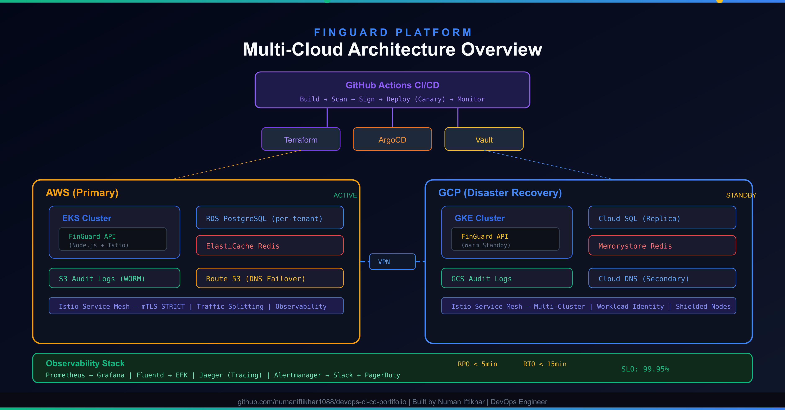
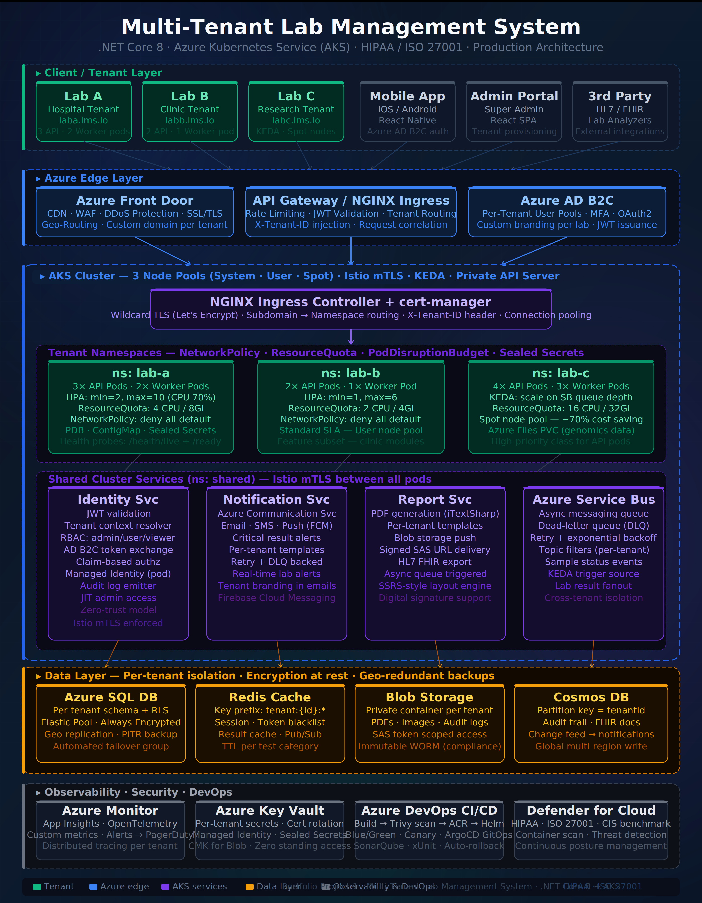

Multi-Cloud Strategy: AWS + GCP Failover Architecture That Achieves RPO < 5 Minutes
How I designed a production-grade cross-cloud disaster recovery system for a banking platform using Terraform, Istio, and automated failover pipelines.
Read ArticleHello, I'm
I'm a Senior DevOps and AI Platform Engineer working across Azure, AWS, and Google Cloud. I design Kubernetes platforms, ship them with Terraform, and build the LLM systems on top — for teams that need production software to be reliable, secure, and defensible.
Trusted Technologies
I'm a Senior DevOps and AI Platform Engineer working across Azure, AWS, and Google Cloud. I design Kubernetes platforms, ship them with Terraform, and build the LLM systems on top — for teams that need production software to be reliable, secure, and defensible.
With 5+ years of experience across Azure (primary), AWS, and Google Cloud Platform, I am a Kubernetes Architect and IaC Expert with deep expertise in designing, deploying, and managing enterprise-grade cloud infrastructure across hybrid and multi-cloud environments — delivered in regulated environments spanning PCI-DSS, SOC 2, HIPAA, and ISO 27001.
I've extended that same production discipline into AI systems — RAG pipelines, local and hosted LLM serving, and agentic workflows built to run in production, not just demo — and into the data engineering plumbing (ingestion, embedding, API services) that makes models and reporting actually usable. I run this practice through my consultancy, 108 Core Technologies, and I'm currently open to senior DevOps, SRE, and AI Platform roles.
A multi-cloud infrastructure foundation, extended into AI systems and the data engineering that supports them
Production Kubernetes on AKS, infrastructure as code with Terraform, and CI/CD pipelines through Azure DevOps and GitHub Actions. Observability with Prometheus and Grafana. Delivered in regulated environments (PCI-DSS, SOC 2, HIPAA, ISO 27001).
RAG pipelines, local and hosted LLM serving, and agentic workflows. Built to run in production, not just demo.
Ingestion, embedding, and API services in Python — the plumbing that makes models and reporting actually usable.
Currently building depth in: vLLM & model serving, fine-tuning (LoRA/PEFT), GPU scheduling, distributed training, and LLM eval/observability tooling (Langfuse, RAGAS/DeepEval) — hands-on learning, not yet production experience.
I bring the production layer AI needs — eval-gated CI/CD, LLM observability (token/cost/latency tracing), guardrails, autoscaling for inference, and FinOps — on top of a strong Kubernetes/Terraform foundation.
End-to-end DevOps & Cloud solutions tailored to your business needs
Migrate your workloads to AWS, Azure, or GCP with zero downtime. Design multi-cloud architectures optimized for cost, performance, and resilience.
Production-grade Kubernetes clusters on AKS, EKS, or GKE with auto-scaling, self-healing, and service mesh architectures.
Automated pipelines from commit to production using GitOps principles. Canary, blue/green, and rolling deployments.
Reproducible, version-controlled infrastructure with Terraform and Ansible. Eliminate drift and manual provisioning forever.
Security baked into every stage of your pipeline. Achieve HIPAA, PCI-DSS, SOC 2, and ISO 27001 compliance.
Full-stack observability with Prometheus, Grafana, and cloud-native monitoring. Never be blind-sided by outages again.
Understand your infrastructure, pain points, and goals
Design a solution with diagrams, timelines, and milestones
Build, test, and deploy with full transparency via Git
Documentation, knowledge transfer, and ongoing support
AI / LLMOps — Retrieval-Augmented Generation for Data That Can't Leave the Perimeter
FinOps — LLM-Assisted Architecture Pricing
Multi-Cloud Banking Platform

Architecture DiagramMulti-Tenant Healthcare SaaS on AKS

Architecture DiagramTelecom — Hybrid Cloud Infrastructure & VoIP (Dubai)
What I'm actively building depth in next — not yet shipped to production
Hands-on lab exploring vLLM for model serving and fine-tuning with LoRA/PEFT.
Deepening my Kubernetes background into GPU-aware scheduling and distributed training workloads.
5+ years working remotely with teams in Canada, USA, and worldwide. Async-first, timezone-flexible, and self-managed.
Certified across all 3 major clouds (AWS, Azure, GCP) plus Terraform. I don't just talk the talk.
99.9% uptime, 70% cost reductions, zero-downtime deployments. My work is measured in business outcomes.
PCI-DSS, HIPAA, SOC 2, ISO 27001 — I build compliance into the infrastructure from day one.
Regular updates, documented decisions, and no jargon. You'll always know exactly where your project stands.
I don't just deploy and disappear. I provide knowledge transfer, documentation, and ongoing support.
"Numan transformed our entire cloud infrastructure. Migrated us from a single-server setup to a fully automated multi-cloud architecture with zero downtime. Our deployment time went from hours to minutes."
"Exceptional Kubernetes expertise. Numan set up our production clusters with auto-scaling and monitoring that just works. We haven't had a single unplanned outage since he built our infrastructure."
"Numan's DevSecOps implementation saved us from a potential compliance nightmare. He automated our entire security pipeline and got us PCI-DSS certified ahead of schedule. Highly recommended."
Want to be my next success story?
Book a Free CallSharing knowledge on DevOps, Cloud Architecture, and Infrastructure best practices
How I designed a production-grade cross-cloud disaster recovery system for a banking platform using Terraform, Istio, and automated failover pipelines.
Read ArticleA deep dive into event-driven autoscaling with KEDA, Azure Service Bus, and Spot nodes — from zero pods to handling 10K concurrent requests.
Read ArticleStep-by-step guide to implementing automated security scanning, OPA policy gates, Vault secret rotation, and Cosign image signing in your GitOps workflow.
Read ArticleNeed help with cloud architecture, DevOps strategy, or infrastructure optimization? Let's talk!
Free one-on-one consultation call
Virtual meeting at your convenience
No obligations, no hidden charges
Powered by Calendly. Pick a time that works for you — confirmation is instant.
Have a project in mind or want to discuss cloud infrastructure? Let's connect!